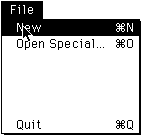
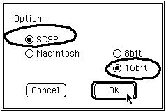
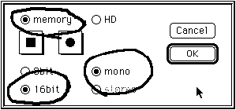
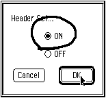
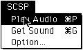
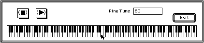
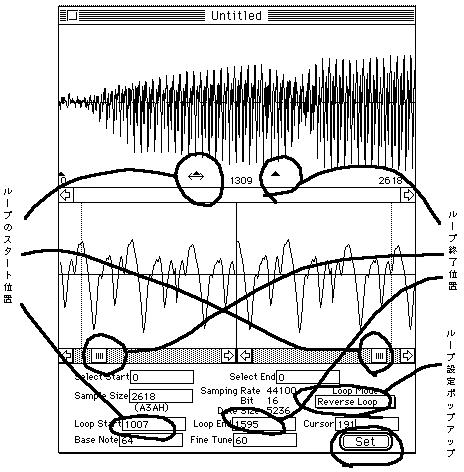
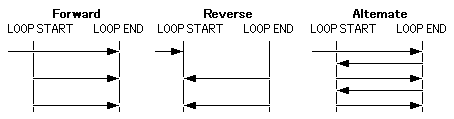

★SGL User's Manual
★SOUND TUTORIAL
★SGL User's Manual
★SOUND TUTORIAL
それでは、実際に音を取り込んでみましょう。
この作業は、サンプリングと呼ばれ、セガサウンドツールのＷａｖｅエディタを使用することにより、読み込んだ音をターゲットから直接出力する事ができます。
以下の順序で音を取り込みます。
図2-2 新規ファイルの作成

図2-3 ターゲットモジュールの設定

図2-4 取り込みの設定

ＨＤの場合には、サンプリング後にファイルが作成され、そのファイルを自分でオープンし直す必要がありますので、注意が必要です。
そのため、Ｗａｖｅエディタを使用するのであれば、なるべくｍｅｍｏｒｙですむような大きさに収めるように心がけてください。
ＨＤを選択した場合は、次の画面が出ます。通常は、“ON”を選択し、“OK”をクリックしてください。
図2-5 HDの設定

図2-6 “Ｐｌａｙ Ａｕｄｉｏ”の選択

図2-7 キーボード画面

図2-8 ループの設定

図2-9 ループモード

| Resample | 11K〜44.1K | サンプル数の変更 (あまり下げるとなめらかな音でなくなる) |
| Pitch Shift | 0〜127 | 大きいと速くなる(標準は60) |
| Size Shift | Max FFFEh | サイズを変更(全てのパラメータに影響) |
| Scale | 100% | ボリュームの調整 |
| Filter LPF(ローパスフィルタ) HPF(ハイパスフィルタ) | 500〜16000Hz 32〜2200Hz | 設定値より高い周波数のカット 設定値より低い周波数のカット |
| Compressor Threshold CompressionRatio | -90〜0 1〜90 | 大きくなるほど、音量は小さくなる 大きくなるほど、音量は小さくなる |
| Noise Gate Threshould Release Hold | -90〜0 0〜2000 0〜2000 | これに達しない部分を無音化する フェードアウトまでの時間 フェードインまでの時間 |
★SGL User's Manual
★SOUND TUTORIAL